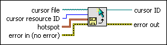

Create Cursor From File VI
Owning Palette: Cursor VIs
Requires: Base Development System
Returns a reference to a cursor in a cursor file.
If a VI that you want to distribute as a stand-alone application or as a shared library uses a cursor from a cursor file, you must distribute the cursor file with the application or shared library.
(Real-Time Module) You cannot use this VI in VIs that run on RT targets.

 Add to the block diagram Add to the block diagram |
 Find on the palette Find on the palette |